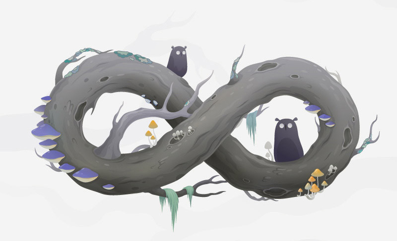

泛黄的厚地毯残留着被岁月侵蚀的痕迹。在偶然翻出的旧式留声机的音乐声中，窝在人体工学的涤纶空壳里，穿过光柱中飘洋的粉尘，透过飘窗看着湖中仿佛静止般的缓慢行船，除了老式白炽灯整流器发出的嗞嗞声外，只有夜幕中夜行动物的吵闹声。
霓虹灯下是多彩的幻影，肆无忌惮的在庄严的赤红厅毯上滚来滚去。绿色的薄荷果汁在玻璃杯里打转，然后在不经意间逃出店门。用最懒洋洋的姿势全身埋在决明子中，只露出握着控制器的手，直到CG结束的那一刻。
彩虹的背面是雪降白色的花瓣，瀑布上的房子只能安静的做一个空壳。海浪轻轻拍打着黄岛悠长的海岸，清晨的兰潭如镜面般映射出芦苇丛的倒影。白雾弥漫的玄武河畔，杨树在微风中窃窃私语；波光粼粼的苏州河边，光影在弄堂中嬉戏穿行。坐在这个巨大城市的最高点，俯瞰着下方如玩具盒子一般的建筑物。在日复一日的期待中出现裂痕，然后将跳动的心脏装在玻璃瓶里扔出去摔碎。一起伴随着风铃声，在熙熙攘攘的夜市中迷路，然后眼睁睁地看着结缘符的一半被风吹走。
催眠视界带着90年代早期的高对比度回忆，重新盖过Robert Sheckley的小幽默。雨世界的混浊池塘中，未知生物伸出长长的食物导管，然后在霜与火的次日清晨燃烧殆尽，变成城市的切片坠入金色梦乡。
假装音痴的人甚至说不出C调和D调哪个更动听，业余的林坤信偶然摆弄笙箫的过程中就能创造出雨这样的音符。
我们在无序的元数据海洋中寻找着一点点规律性的微光，midi音波表
我不信它能过图灵测试。 标着AZURE的袖扣 仿佛刚刚熨烫过的整齐的边角。尽力调整不安的呼吸声，然后在聚光灯下瞬间平静。Baader-Meinhof效应让我再一次看表的时候又恰巧是11点11分。
双手做出蝴蝶飞舞的动作，却无法随着恐龙的旋律低声吟唱。你用正体字也追逐不到你要的东西，因为熵是不可逆的动态过程。结果不是硬币的正反面，过程不是钢琴的黑白键。蜘蛛网里的卷发小家伙长大了，然后在新组建的乐队里差一点变成了自己曾经厌恶的人。情景总是可以轻易改变一个词的原意，幸运的是不用倚靠在冰冷的墙上一直抓着电话线。黑猫Mae也挽救不了Alec的生命，合上书的瞬间就会忘记乐园中的故事，那是去月面的人们心中的恶魔。
如果让选一本最喜爱的书，我一定会选Tal Ben-Shahar博士的《Happier》，不是中译本那容易让人误以为是鸡汤书的名字《幸福的方法》，也不是哈佛大学那每隔五分钟就会加入一句学术语言的幸福课。经过长时间的心理训练，我已经做到了在一年的365天中的355天左右都保持心情极佳，且保持了五年多。
『剩下的那十天呢？』
『随便找陌生人聊天，就像今天一样。』
『我是那个陌生人？』
『平均一年和我对话低于五十句的都算陌生人。』
『为什么是五十句？』
『这不是重点。』
今年我愿做完鲸鱼让其沐浴在阳光下，并且永远都不再关闭；然后用6B铅笔全部涂黑，像Hugo的瞳孔一样黑。年复一年的愿望无非是另一种仪式感，如同情绪一样起伏波动。一个人坐在木栈道边，让双脚悬空摆动。脚下是巨大而又光滑的礁石，在黄昏的余韵中大口呼吸 乒乓球清脆的击打声，来回来回，嘀嗒嘀嗒，直到心电图变成一条直线。
又是特别而又安静的一天，就像过去的9490个夜晚一样波澜不惊。也许当放弃了生命中最宝贵的东西之后，就再也感受不到任何恐惧。在蝴蝶效应中塌缩为一个奇点。时间既短暂又漫长，幸运的我们选择了同样的旅程。
而这既是我的命运。